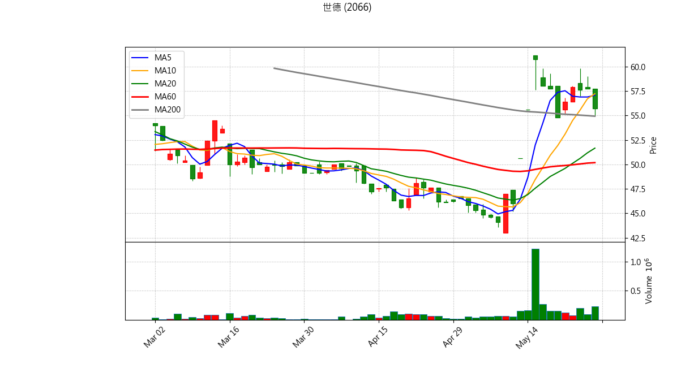
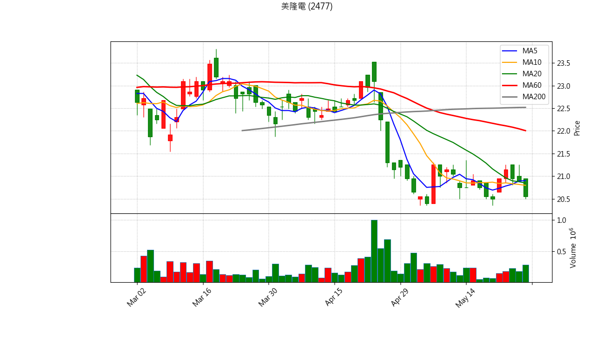
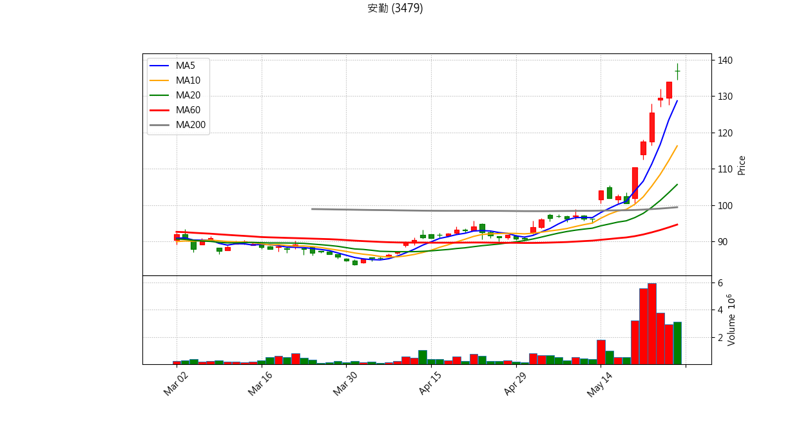
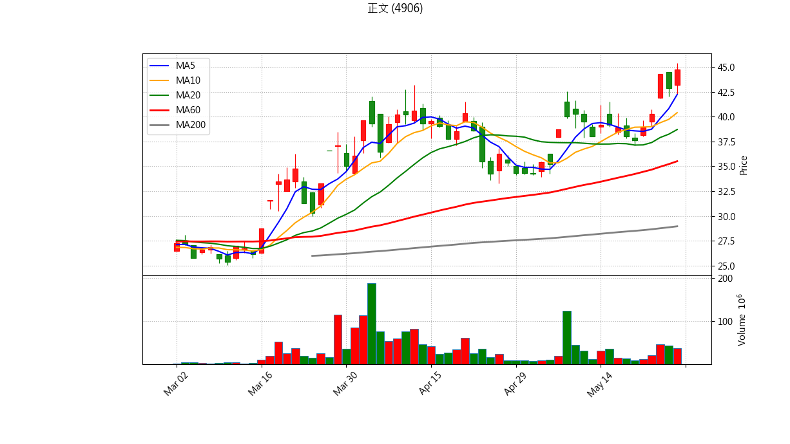
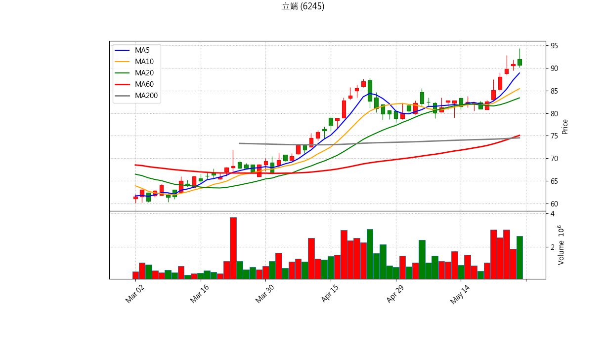
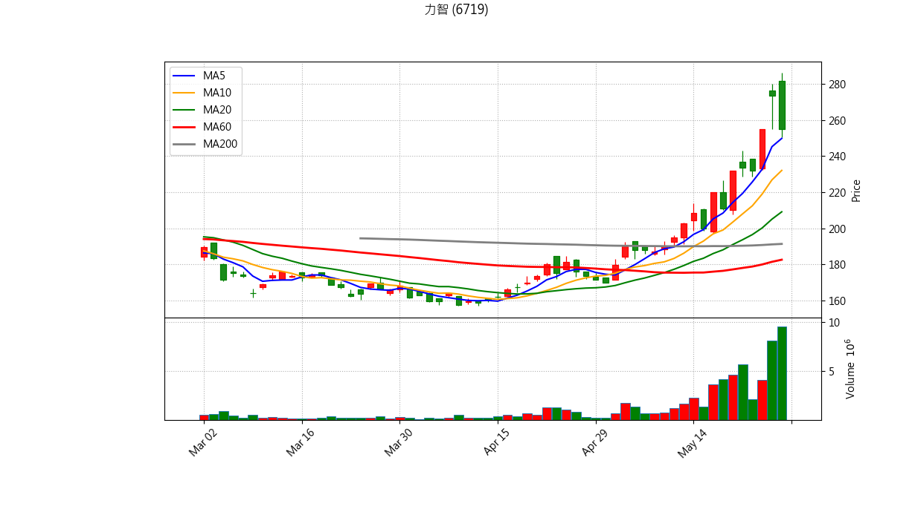

📊 股票庫存 出場與 AI 綜合診斷報告
分析時間: {datetime.now().strftime("%Y-%m-%d %H:%M:%S")}
結合量化條件與 Gemini AI 綜合技術分析
世德 (2066)
最新收盤價: 55.70 (更新時間: 2026-05-27 21:48)
💼 庫存狀態
買進均價：98.03
庫存股數：3000
預估損益：-126,990
報酬率：-43.18%
📋 量化診斷結果
⚠️ 【跌破 5日線】短線轉弱，留意停損/停利。
🚨 【跌破 10日線】波段趨勢破壞，強烈建議波段出場。
📉 【下跌量增】賣壓沉重，跌勢可能持續。

藍線: 5MA, 橘線: 10MA, 綠線: 20MA, 紅線: 60MA, 灰線: 200MA
Gemini 綜合診斷
美隆電 (2477)
最新收盤價: 20.55 (更新時間: 2026-05-27 21:48)
💼 庫存狀態
買進均價：27.10
庫存股數：2000
預估損益：-13,100
報酬率：-24.17%
📋 量化診斷結果
⚠️ 【跌破 5日線】短線轉弱，留意停損/停利。
🚨 【跌破 10日線】波段趨勢破壞，強烈建議波段出場。
💀 【跌破季線且季線下彎】生命線斷裂，絕對停損訊號！
📉 【下跌量增】賣壓沉重，跌勢可能持續。

藍線: 5MA, 橘線: 10MA, 綠線: 20MA, 紅線: 60MA, 灰線: 200MA
Gemini 綜合診斷
安勤 (3479)
最新收盤價: 137.00 (更新時間: 2026-05-27 21:49)
💼 庫存狀態
買進均價：103.06
庫存股數：500
預估損益：16,970
報酬率：32.93%
📋 量化診斷結果
✅ 目前未觸發明顯技術面出場條件，可依紀律續抱。

藍線: 5MA, 橘線: 10MA, 綠線: 20MA, 紅線: 60MA, 灰線: 200MA
Gemini 綜合診斷
正文 (4906)
最新收盤價: 44.75 (更新時間: 2026-05-27 21:49)
💼 庫存狀態
買進均價：43.55
庫存股數：2000
預估損益：2,400
報酬率：2.76%
📋 量化診斷結果
✅ 目前未觸發明顯技術面出場條件，可依紀律續抱。

藍線: 5MA, 橘線: 10MA, 綠線: 20MA, 紅線: 60MA, 灰線: 200MA
Gemini 綜合診斷
立端 (6245)
最新收盤價: 90.60 (更新時間: 2026-05-27 21:50)
💼 庫存狀態
買進均價：94.04
庫存股數：162
預估損益：-557
報酬率：-3.66%
📋 量化診斷結果
📉 【下跌量增】賣壓沉重，跌勢可能持續。

藍線: 5MA, 橘線: 10MA, 綠線: 20MA, 紅線: 60MA, 灰線: 200MA
Gemini 綜合診斷
力智 (6719)
最新收盤價: 255.00 (更新時間: 2026-05-27 21:50)
💼 庫存狀態
買進均價：224.00
庫存股數：1000
預估損益：31,000
報酬率：13.84%
📋 量化診斷結果
💣 【高檔爆量長黑】主力可能出貨，符合停利/停損要件。
📉 【下跌量增】賣壓沉重，跌勢可能持續。

藍線: 5MA, 橘線: 10MA, 綠線: 20MA, 紅線: 60MA, 灰線: 200MA